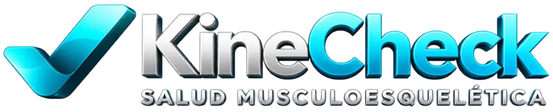

Comprende la evidencia
Accede a la biblioteca gratuita y revisa recursos científicos contextualizados.

Casos interactivos, herramientas y formación para transformar conocimiento científico en decisiones clínicas fundamentadas. Para profesionales y estudiantes de salud musculoesquelética.
Del conocimiento científico a la toma de decisiones, sin sustituir el juicio clínico ni la supervisión profesional.
Accede a la biblioteca gratuita y revisa recursos científicos contextualizados.
Trabaja con actividades y situaciones clínicas simuladas.
Utiliza la retroalimentación para contrastar hipótesis y fundamentos.
Transfiere lo aprendido a tu razonamiento profesional, respetando los límites de los recursos educativos.
Dos rutas activas y una tercera experiencia todavía en desarrollo.
Evaluación estructurada, razonamiento clínico y evidencia aplicada para organizar hipótesis y decisiones en la práctica musculoesquelética.
Ver ruta profesional →Formación guiada para aprender a evaluar, formular hipótesis y conectar hallazgos con decisiones clínicas desde el pregrado.
Ver ruta estudiante →Experiencia de seguimiento todavía no habilitada para compra ni registro de información.
Próximamente →KineCheck traduce principios de evaluación y razonamiento musculoesquelético en experiencias educativas que ayudan a ordenar información, hacer explícitas las hipótesis y revisar decisiones sin automatizar el diagnóstico.
Integra historia, seguridad, examen y hallazgos dentro de un razonamiento estructurado, evitando depender de pruebas aisladas.
Los contenidos trabajan evaluación estructurada, CIF, hipótesis, PROMs, evidencia y casos ficticios, simulados o debidamente anonimizados.
KineCheck organiza y enseña el proceso; no reemplaza una ficha clínica institucional, el juicio profesional, la supervisión clínica ni la atención de salud.
Actualización abierta: consulta gratuitamente las novedades científicas que sí justifican ajustar contenidos y aquellas que todavía requieren cautela.
Los cursos KineCheck cuentan con evaluación final interna y trazabilidad académica. Estamos preparando un convenio con una OTEC para una futura certificación privada de cursos seleccionados. Hasta que exista convenio formal y aprobación escrita de cada programa, KineCheck no emite ni ofrece certificados OTEC.
Alcance: no son cursos SENCE, no poseen código SENCE y no utilizan franquicia tributaria. Una vez formalizada la certificación, el certificado podrá presentarse como antecedente de capacitación o formación complementaria, sujeto a las bases o criterios de cada institución.
Materiales educativos breves, sin pago ni registro obligatorio, para revisar conceptos y poner a prueba decisiones clínicas.
Un solo acceso a los recursos educativos: comunicación clínica, dolor, ejercicio terapéutico, seguridad y evidencia MSK. Sin pago ni registro.
Etiquetas diagnósticas, comunicación del dolor musculoesquelético y tres casos clínicos con retroalimentación, basados en Martin et al. (2025).
Diagnóstico diferencial, dolor referido y radicular, evaluación integrada y tres casos interactivos basados en Schumacher y Shepherd (2026).
Anatomía medular, nocicepción y lectura crítica de una hipótesis sobre dolor musculoesquelético, con cuatro actividades autocorregibles.
Auditoría de Arora et al. (2026), dosis-respuesta, cuatro desafíos clínicos y guion de carrusel científico.
Una guía visual para reconocer señales de alerta e interpretar cuándo continuar, adaptar o derivar durante la evaluación musculoesquelética.
Novedades científicas que merecen atención, sintetizadas para distinguir cambios aplicables de hallazgos que todavía requieren cautela.
Comentarios reales recibidos durante la etapa beta. Para proteger la privacidad, no se muestran nombres ni otros datos identificatorios; solo el tipo general de tester.
Me pareció una herramienta sumamente interesante y de gran valor. La información es clara, comprensible y muy bien respaldada con evidencia científica. La interfaz me pareció amigable e intuitiva.
La sección de evidencia científica me pareció muy útil porque ayuda a pensar mejor, redactar y darle otra visión a las situaciones. Los botones y la información son excelentes y todo queda claro desde el primer minuto. Me encantó.
Leí y apreté cuanto pude. No me salieron fallas y los enlaces que probé se abrieron correctamente y me dirigieron a las fuentes. La única falla fue la del comienzo y la solucionaron de inmediato. Me encantó el curso. Recomendado.
Buenísima aplicación, buenísima plataforma. Cursos totalmente recomendados para profesionales del área de la salud.
Totalmente recomendado. Muy buen sustento y actualización. Lo haría mil veces más.
Buenísimo. Espero nuevos cursos. Totalmente recomendado.
Está funcionando perfecto. Está súper bueno, súper intuitivo y fácil de manejar. Es un muy bonito trabajo.
Está buena la app, se ve bien. Está bastante bien.
Privacidad: no se publican nombres, apellidos, correos electrónicos, instituciones ni otros datos de identificación o contacto.
Entras a la ruta pertinente para profesional o estudiante.
Explora la demo, revisa contenidos, metodología, precio, vigencia y condiciones.
La compra se procesa por Hotmart. Si ya tienes acceso, ingresa con el correo asociado a tu compra.